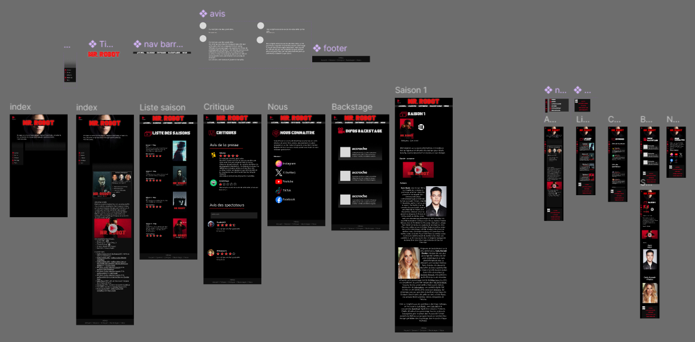

Description
J'ai eu l'occasion en première année de réaliser en équipe le front d'un site de streaming fictif, plus précisément la page traitant de la série Mr. Robot.

J'ai eu l'occasion en première année de réaliser en équipe le front d'un site de streaming fictif, plus précisément la page traitant de la série Mr. Robot.
Nous n'avions au départ que la retranscrition d'un entretien avec le client, dans lequel il décrit ce qu'il attends de son site. Nous en avons ensuite déduit les différentes pages, fonctionnalités qui devront être présentes, et avons réalisé un cahier des charges.
Il fallait à présent définir l'identité graphique du site, les couleurs, le logo, les polices... Nous avons décidé de nous inspirer des visuels des affiches de la série, qui sont assez sombres à l'exception du titre en rouge vif.

Nous avons ensuite réalisé la maquette du site avec Figma. Cela nous a donné une idée assez claire de ce à quoi le site final ressemblerait, et de la navigation de l'utilisateur.
Grâce à la maquette, nous avions une idée claire du résultat final attendu, il ne restait plus qu'à le coder. Ce site étant statique, nous avons utilisé HTML et CSS, ainsi qu'un peu de JavaScript pour avoir plus d'interactivité.
Ce projet fut le premier projet de "grande" ampleur que j'ai réalisé en groupe. Nous avons réalisé toutes les étapes de création de A à Z, ce qui nous laissait une grande marge de manœuvre et de créativité. De plus, ce projet requierait de l' organisation pour être mené à bien, et au final toute l'équipe est satisfaite du résultat.
Voir le code
Voir le site